Competion Descriptions
Dean’s Imagineering Competition: This competition is designed to reinforce the ideals of creating the Societal Engineer by giving students the opportunity to express their creativity and entrepreneurial capabilities on ideas that impact society. The competition provides a framework where interested undergraduate and graduate students can, individually or as a team, create and enter an original project in the competition.
Catapult Competition: Catapult designs must incorporate a quick release mechanism and will be judged on the catapult’s furthest distance achieved launching a golf ball (best of three attempts).
Lutron Lighting Competition: Each team must design and construct their coolest, most innovative lighting design project. Projects will be judged on: Creativity and Originality, Engineering Sophistication, and Aesthetic Appeal. Any combination of mechanical, electrical and computer engineering will prove useful toward these categories. Projects may (but need not) include complex mechanical design, circuitry, or microcontroller programming to produce a final project of these qualities. Requirements for amount of light produced, application of product, or overall purpose are intentionally left ambiguous to allow for a wide spectrum of resulting projects.
Photos of Medals Up Close
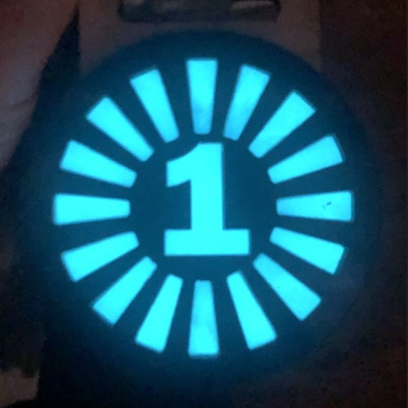
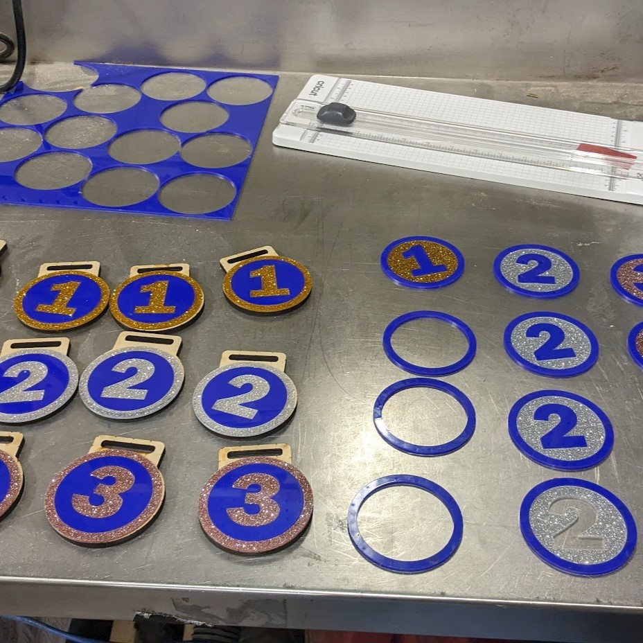
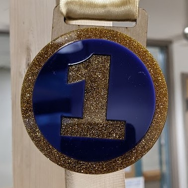
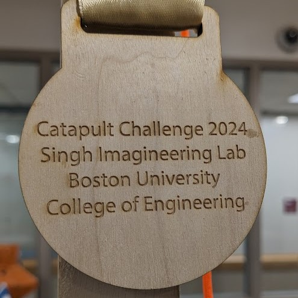
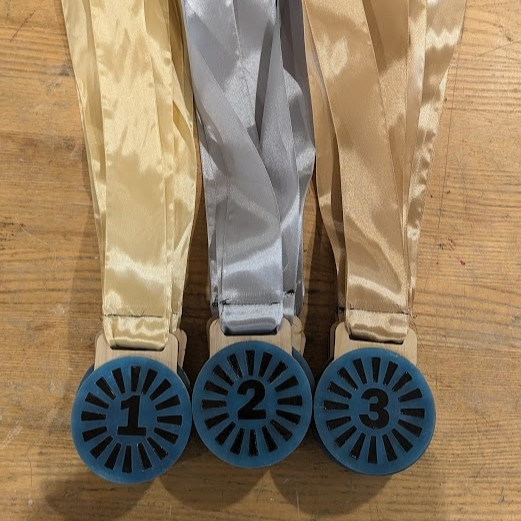
Some Photos of Victories Made a Little Sweeter with the Medals
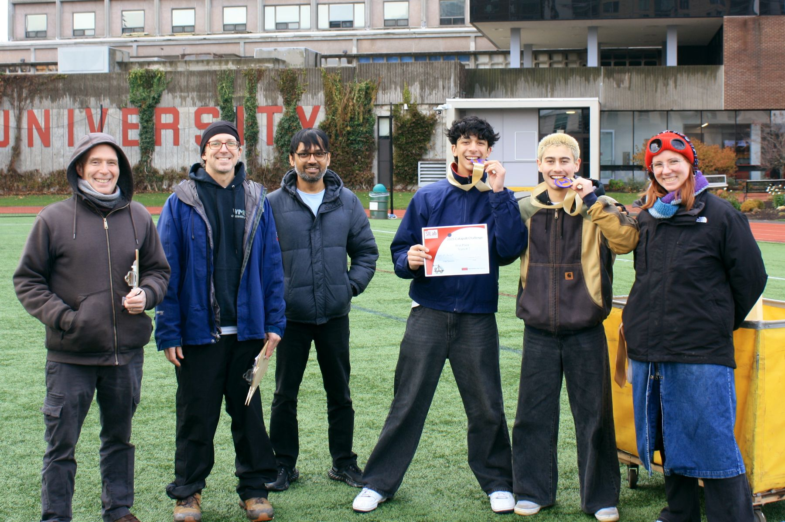
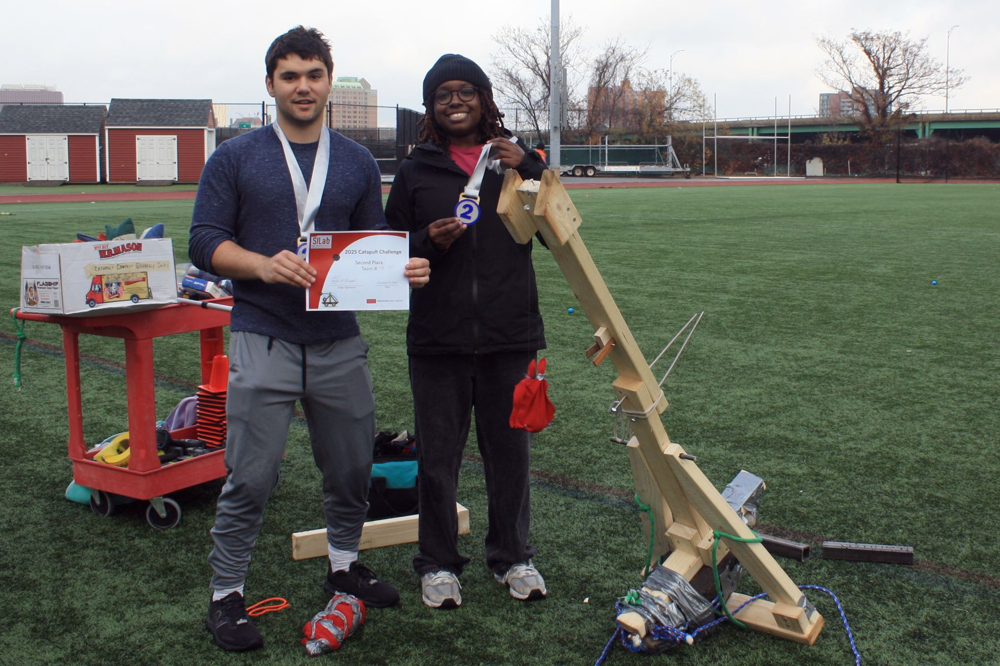
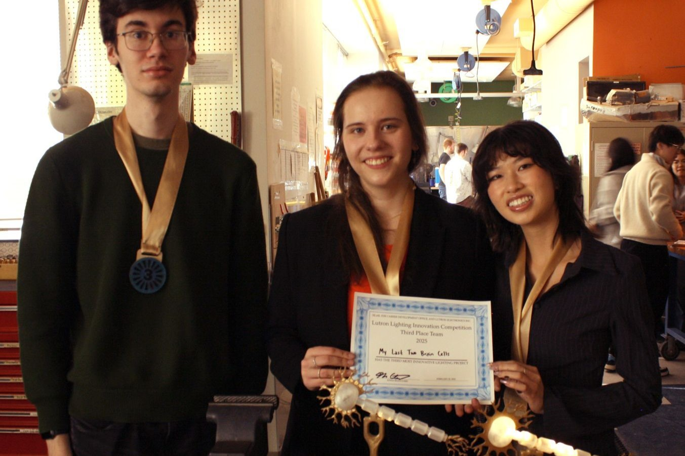

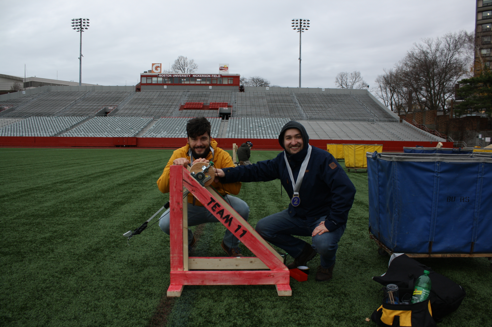
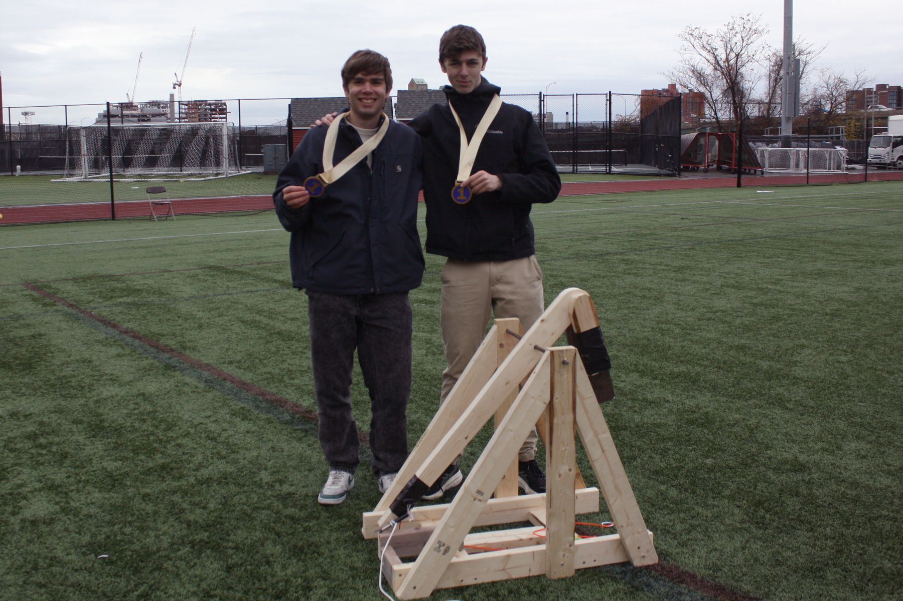
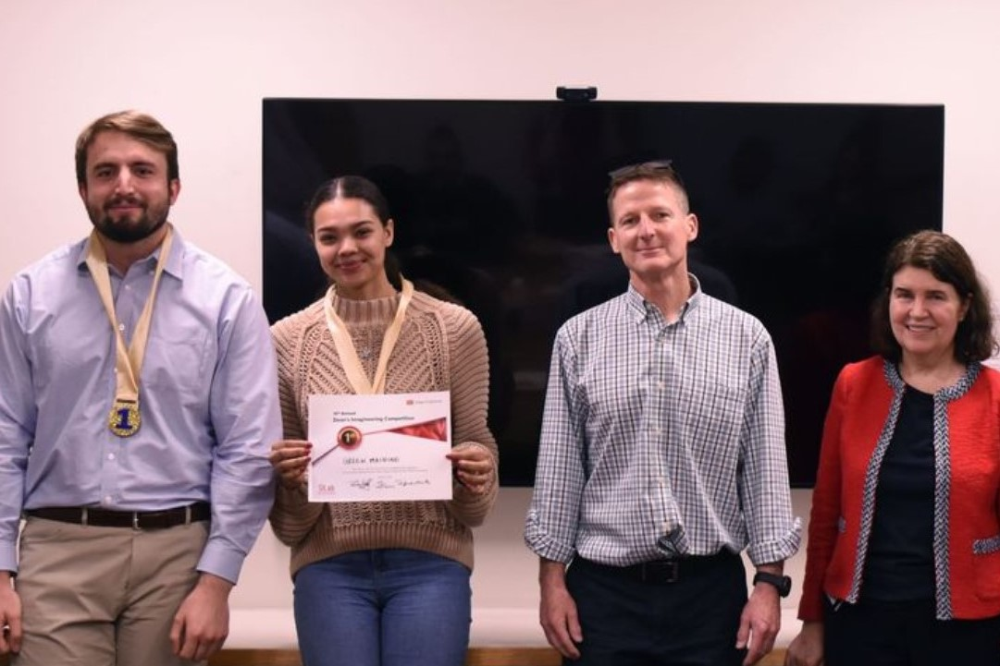
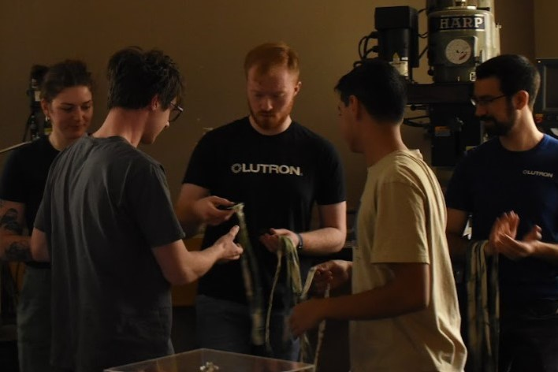
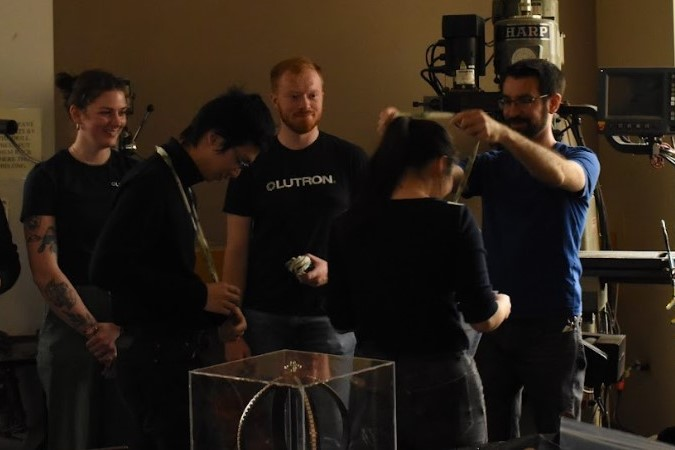
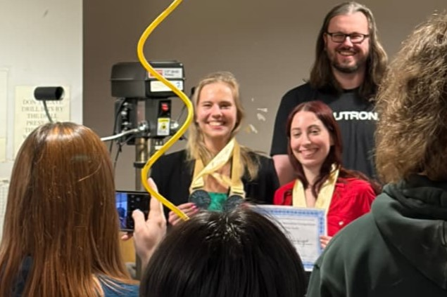
More info:
← Previous Project Next Project →